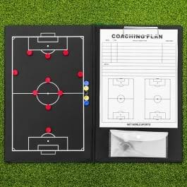

Why Low Blocks Are Winning Big Games Again
A look at how defensive-first tactics have made a comeback in the past two seasons, and which teams are doing it best.
Match breakdowns, player stories, and everything in between
The Football Corner is a blog for people who watch every match they can and still want more to read afterward. Expect tactical breakdowns, player features, and honest takes on the biggest storylines in the sport.

A look at how defensive-first tactics have made a comeback in the past two seasons, and which teams are doing it best.